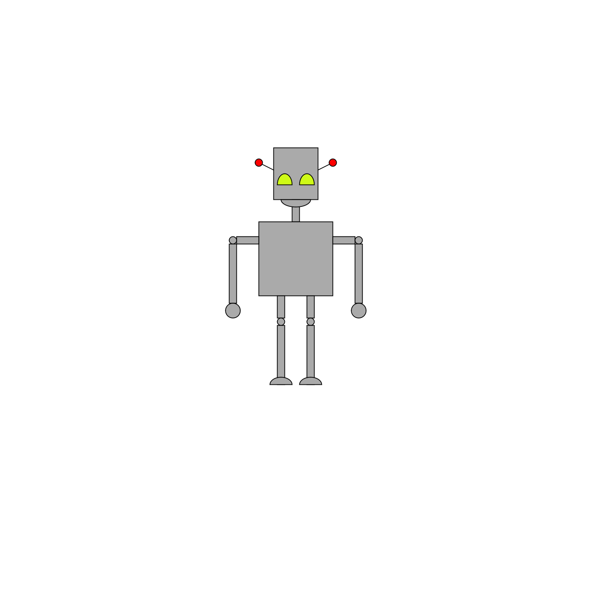

Your sketch:
This is an open-ended exercise so there is no expected output or hints.
Design and implement a character using p5.js's built-in primitive shapes. Your character can be anything you like (alien, monster, some sort of animal...) as long as it meets the following requirements:
Be creative in your use of shapes and colours. You are encouraged to use shapes listed under "2D Primitives" in the p5.js reference that we haven't covered in class i.e. arcs, quads. Please don't try to use more complex shapes from other parts of p5.js (3D, PShape) just yet. The point of this exercise is to get really comfortable with 2D primitive shapes.
You will animate your character in a future practical.
Here is my character, Robert the Robot. Robert is not very colourful. Try to be more colourful!
